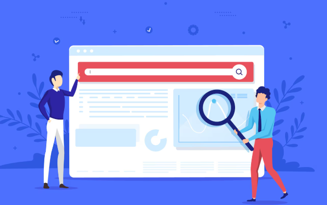

Let's be honest - SEO has never felt this confusing before.
You publish a well-researched article, it climbs to position one on Google, and yet your analytics tell a frustrating story: traffic is flat. Sometimes it's even dropping. You're visible, but nobody's clicking. Welcome to the age of zero-click searches, where ranking number one no longer guarantees a single visit to your website.
This isn't a glitch. It's the new normal and if you don't adapt, your competitors will leave you behind.
What Exactly Is a Zero-Click Search?
A zero-click search happens when a user types a query into Google (or any AI-powered search engine) and gets their answer directly on the results page - without clicking through to any website. The search engine itself becomes the final destination.
This isn't a new phenomenon. Google has been serving instant answers for years through featured snippets, knowledge panels, People Also Ask boxes, and local packs. But the rise of AI Overviews, ChatGPT search, Perplexity AI, and Google's Search Generative Experience (SGE) has turbocharged the trend dramatically.
Studies suggest that nearly 60% of Google searches on mobile now end without a single click. That number is only going up. The search engine has quietly transformed from a traffic referral engine into an answer engine andyour entire content strategy needs to reflect that shift.
Why This Is Happening Now
The driving force behind the zero-click explosion is artificial intelligence. AI-powered SERP features no longer just pull a snippet from one page - they synthesize answers from dozens of sources, present them conversationally, and leave users with little reason to dig further.
Google's AI Overviews now appear on roughly 30% of informational queries. Tools like Perplexity AI and Bing Copilot go even further, combining real-time web search with LLM-generated summaries. Voice assistants like Alexa and Google Assistant pull featured snippets directly, delivering your content with zero attribution and zero traffic back to your site.
This is the AI search era. Visibility and traffic are no longer the same thing.
Is SEO Dead?
Absolutely not. But the old playbook is.
If your entire strategy revolves around driving clicks to informational blog posts, you're building on a crumbling foundation. The smarter play is to shift from a traffic-first mindset to a visibility-first strategy - while making sure your revenue-driving pages still earn meaningful clicks.
Think of zero-click appearances as digital billboards. Your brand shows up at the exact moment someone needs it. That builds trust, familiarity, and authority - even when the user doesn't click.
How to Win in a Zero-Click World
The brands thriving right now aren't fighting AI - they're feeding it strategically. Here's how.
Structure your content for snippet capture. AI systems and Google's featured snippet algorithm love content that's formatted for easy extraction. Write concise 40–60 word paragraphs that answer a query directly in the opening sentence. Use structured headers that mirror real search queries. Add definition-style writing - "X is..." statements that AI tools can pull cleanly. Build comparison tables for competitive queries. Implement FAQ schema and HowTo schema markup to signal your content structure to search engines.
The goal is simple: make your content so easy to extract that Google and AI search tools can't ignore it.
Build topical authority, not just keyword rankings. Google's Knowledge Graph and AI search engines evaluate entities - the people, places, concepts, and brands they recognize andhow they relate to each other. If your site comprehensively covers a topic cluster (not just individual keywords), you become a trusted source that AI systems reference repeatedly.
This is what Generative Engine Optimization (GEO) is about - becoming the default citation in AI-generated answers for your niche. Publish original research, back your content with first-party data, include expert quotes, and use author schema to demonstrate credibility. E-E-A-T (Experience, Expertise, Authoritativeness, Trustworthiness) isn't just a Google guideline anymore - it's the entry ticket to AI citations.
Optimize for voice search and conversational queries. When people use voice assistants or AI chatbots, they don't type shortcuts - they ask complete questions. "What's the best way to reduce cart abandonment for an ecommerce store?" is a voice-style query that your content should directly address.
Use natural, conversational language. Write at an accessible reading level. Anticipate follow-up questions and address them sequentially. If your content sounds robotic when read aloud, it won't get cited in voice responses.
Dominate your local presence. For local businesses, zero-click searches are actually an opportunity, not a threat. The Google local three-pack delivers your hours, reviews, location, and phone number directly on the SERP. Someone can call you, get directions, or check your rating without visiting your website andthat's still a real business outcome. Keep your Google Business Profile fully optimized, maintain consistent NAP (Name, Address, Phone) data across all directories, and actively manage your reviews. Local pack visibility translates directly to foot traffic and calls.
Target bottom-of-funnel queries aggressively. Not every search ends without a click. Navigational queries, commercial queries, and transactional queries still generate meaningful clicks. These are the queries worth competing for if website traffic directly feeds your revenue.
Long-tail, high-intent keywords are your best friends in 2025 and beyond. Someone searching "zero-click search strategy for B2B SaaS" wants actionable guidance - not a featured snippet definition. They'll click through.
Measuring Success Beyond CTR
This is where most SEO teams struggle. Traditional click-through rate reports don't tell the full story in a zero-click world. You need new KPIs.
Track your SERP feature appearances - how often your content earns featured snippets, People Also Ask placements, and AI Overview citations. Monitor entity association strength - whether Google consistently connects your brand with your target topics. Measure revenue and conversions from your commercial and transactional pages separately from informational content.
And when you can, tell the story behind the data.
The Honest Truth About Zero-Click Searches
Zero-click doesn't mean zero opportunity. It means zero tolerance for mediocre, generic, or unstructured content.
The brands winning in the AI search era are the ones treating visibility as a first step - not the finish line. They're showing up in AI Overviews and voice results to earn trust, while building irresistible content experiences that pull high-intent users deeper into their world.
You don't have to choose between being visible and generating traffic. But you do have to be intentional about both.
The search landscape has changed. The question is whether your strategy will.
Want to Stay Visible Even When Users Don’t Click?
In the zero-click search era, success isn’t just about rankings - it’s about visibility, authority, and being the source AI trusts. Build a strategy that gets your brand seen and chosen.